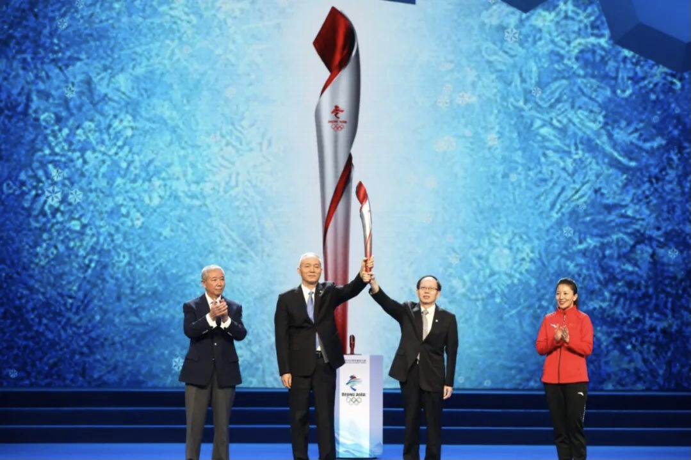
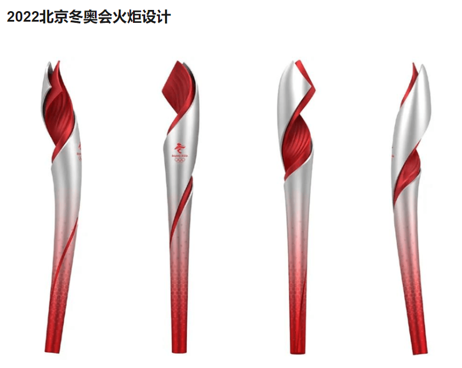

奥运文化——北京2022冬奥会冬残奥会火炬
【来源】：互联网
北京2022年冬奥会火炬，名为“飞扬”，颜色为银色与红色。 2021年2月4日，北京2022年冬奥会火炬正式发布。2021年10月18日12时08分，北京冬奥会火种在希腊伯罗奔尼撒半岛的古奥林匹亚采集成功。 北京2022年冬奥会火炬象征冰火相约，激情飞扬，照亮冰雪，温暖世界；象征着不同文明交流互鉴，让世界更加相知相融的冬奥愿景。 2020年4月24日，北京2022年冬奥会和冬残奥会组委会面向社会公开征集北京2022年火炬外观设计方案。

2020年9月22日，经过北京冬奥组委多轮评审，从182个征集方案中，确定了火炬设计方案。 2021年2月4日，北京2022年冬奥会火炬正式发布。 2022年1月，北京冬奥组委宣布：北京冬奥会火炬将于2月2日至4日在三个赛区传递。
冬奥火炬中的奥运文化
北京2022年冬奥会火炬外形极具动感和活力，红色渐变到银色。整体造型受大自然启发，自然界的流线力量充满生机。火炬主体采用螺旋设计，看上去像是一条舞动的丝带。在整个火炬的下方，图案逐渐从祥云变为剪纸风格的雪花。奥运圣火在顶端燃烧。2022年北京冬奥会会会徽刻印在火炬中间位置。采用碳纤维和复合材质打造，重量轻、耐高温。火炬主要的燃料是氢气。使用3D打印技术。北京2022年冬奥会火炬遵从了“道法自然，天人合一”的中国传统哲学思想。因为它是盘旋向上的，它生长感觉给比较像植物，生生不息，不断发芽，不断地在往上长。采用红色和银色作为火炬主色隐喻冰与火，象征着火炬会给冰雪世界带来“光明和温暖”，象征冰火相约，激情飞扬，照亮冰雪，温暖世界。颜色选择以及手柄部位的祥云图案也代表着2008年北京奥运会的延续。使用和2008年北京奥运会火炬相同的配色以及相似的艺术元素是因为希望能够像夏奥会时一样向世界致以吉祥的问候，并展示北京丰富的奥林匹克文化。红色线条代表着长城、冬奥会滑雪赛道以及人类对于光明、和平和卓越的不断追逐。火炬手在交接圣火的过程中需要将两个火炬的“丝带”设计相连，象征着不同文明交流互鉴，让世界更加相知相融的冬奥愿景。火炬燃料与北京奥组委力争举办一届“绿色高科技冬奥会”的努力保持一致。

文化活动
（1）疫情防控 由于全球疫情防控形势依然严峻复杂，火炬接力工作将缩减传统传递路线和时间，相应减少传递人员数量，将严格遵循疫情防控要求并强化防疫工作保障措施，确保火炬手和参与传递活动的相关人员安全，保障传递活动和冬奥赛事安全有序。 （2）火种展示 火种展示按时间顺序将分三个阶段进行。第一阶段，在北京奥林匹克塔结合奥林匹克火炬展览进行火种展示。第二阶段，部分奥林匹克全球合作伙伴和北京冬奥会官方合作伙伴结合企业公益项目进行火种展示。届时，火种将在部分企业总部、社区、乡村、学校进行展示。第三阶段，将在冰雪资源丰富、冰雪运动基础较好的黑龙江、吉林、内蒙古、天津等地进行火种展示。 （3）火炬传递 2022年2月2日至4日，在北京、延庆、张家口三个赛区将开展传统的火炬传递活动，共有约1200名火炬手参与传递。同时，火炬接力活动还包括火种展示和网络传递。传递路线立足冰雪文化、历史文化、长城文化，呈现沿途的自然风光、人文特色和城市风貌。 （4）网络传递 广大网民可通过AR、VR、话题挑战等多种互动形式，共享北京冬奥盛会。
浏览量：34

- 联系
我们

工作日：
早9:00-晚18:00
杨老师：
400-888-8888